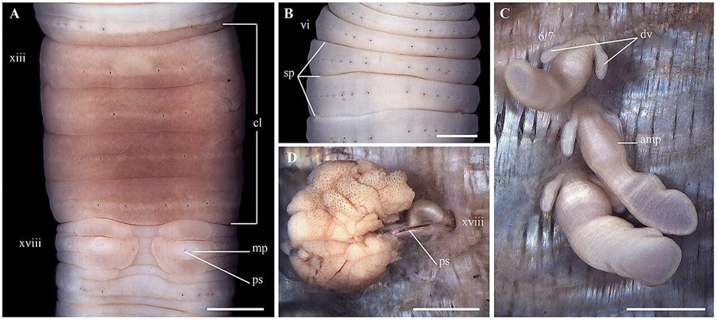

केंचुआ (लैम्पिटो)Pasture Earthworm
Lampito mauritii · Megascolecidae · SFL-0011

- Scientific nameवैज्ञानिक नाम
- Lampito mauritii (Kinberg, 1867)
- Familyकुल
- Megascolecidae
- Hindiहिंदी
- केंचुआ (लैम्पिटो)
- Local namesस्थानीय नाम
- kenchua, pasture kenchua, mitti ka kenchua
- Status hereयहाँ की स्थिति
- native
- Movementआवागमन
- Resident, here all year
- IUCNIUCN
- not evaluated
- Reviewसमीक्षा
- audited and independently read
When to look कब देखें
Present all year.साल भर मौजूद।
Uses and possibilities उपयोग और संभावनाएँ
Drawn from the documented uses in the profile below, where each is labelled traditional, current or a research lead. All uses →
Tell it apart from इनसे अलग पहचानें
केंचुआ (लैम्पिटो) / Pasture Earthworm
Lampito mauritii (Kinberg, 1867) — Megascolecidae
केंचुआ (लैम्पिटो) — यह एक मध्यम आकार की, भूरी-काली देशी मिट्टी की मेंढक जैसी कीट है जो पूर्वी उत्तर प्रदेश की मिट्टी में पाई जाती है। इसे गाँवों में सिर्फ "केंचुआ" कहते हैं, पर इसका वैज्ञानिक नाम Lampito mauritii है। यह मिट्टी को खोदती है, गहरी सुरंगें बनाती है, मृत पत्तों और जानवरों के गोबर को खाती है, और इसे पोषक तत्वों से भरी मिट्टी में बदल देती है। हर केंचुए से मिट्टी अच्छी होती है, पानी अंदर जाता है, और हवा चलती है। किसान जानते हैं कि जहाँ केंचुए होते हैं, वहाँ फसल अच्छी होती है।
Quick Identification त्वरित पहचान
| Feature | Description |
|---|---|
| Size | Medium earthworm; body length 10–20 cm; diameter 5–8 mm |
| Colour | Brown or dark brown; sometimes with reddish tinge on anterior end |
| Segments | Approximately 100–150 segments; cylindrical body |
| Clitellum | Saddle-like thickened band, typically reddish, located around segments 14–16 |
| Mucus sheath | Produces a thin mucus layer on the body surface |
| Texture | Smooth, moist, slightly slimy to the touch |
| Behaviour | Burrows in soil; emerges when soil is saturated or during monsoon rains |
Field tip: Search in moist soil, compost heaps, or mulched garden beds. Dig a shallow pit (15–20 cm deep) in well-moistened soil or search after rain. The earthworm will be found in burrows or in soil rich in decaying plant matter. The presence of numerous, dark burrows in soil and the absence of compact, hard soil are signs of earthworm activity.
हिंदी — कैसे पहचानें: मिट्टी में गहरी सुरंग बनाता है। भूरा-काला रंग, लंबा, मोटा केंचुआ। बरसात में बहुत निकलते हैं।
Morphology आकारिकी
Biometrics (typical measurements for specimens in Gangetic plain):
| Measurement | Range |
|---|---|
| Body length | 10–20 cm |
| Body diameter | 5–8 mm |
| Weight (live) | 0.8–2.0 g |
| Segment count | 100–150 |
Structure: Segmented body (segments called metameres), cylindrical in cross-section. The body wall consists of an outer cuticle, muscular layers, and internal coelom. The clitellum (reproductive band) is a saddle-like thickening in the anterior body region, typically reddish or darker than surrounding segments. This gland secretes mucus and cocoon material. The mouth is terminal and simple; the anus is at the posterior end. Setae (bristle-like structures) are present on each segment, allowing the worm to grip soil and move. The worm is hermaphroditic (both male and female reproductive organs present), but cross-fertilization is typical.
Behaviour & Ecology व्यवहार और पारिस्थितिकी
An endogeic earthworm (soil-dwelling, burrowing type). Lampito mauritii is a strict soil dweller, constructing deep, permanent burrows that may extend 30–50 cm into the soil profile. It feeds below ground on decaying organic matter, root litter, and soil microbes. The earthworm's burrows aerate the soil, increase water infiltration, and create channels for root penetration. As the worm feeds and excretes, it enriches the soil with nutrient-rich casts (faeces).
The species is most active during the monsoon when soil moisture is high. During dry seasons, it retreats deeper into the soil to find moisture. It responds to vibrations and flooding by surfacing, a behaviour that is adaptive when soil becomes waterlogged.
हिंदी: मिट्टी में गहरा रहता है, बुरी खोदता है। पत्तियों और गोबर खाता है, पोषक तत्वों वाली मिट्टी बनाता है। बरसात में ऊपर आता है।
Life Cycle / Phenology जीवन चक्र
| Stage | Duration |
|---|---|
| Egg (in cocoon) | 14–28 days |
| Hatchling | Emerges from cocoon as miniature worm |
| Juvenile growth | 30–60 days to sexual maturity |
| Adult lifespan | 2–5 years |
| Reproductive period | Continuous during moist season; reduced in dry season |
Seasonal activity: Year-round active in the soil. Peak reproductive and feeding activity during monsoon (June–October) when soil moisture is high. Activity declines during dry season (April–May) when the worm retreats to moist depths.
Host Plants or Prey आहार
Detritivorous diet:
- Decaying plant material: leaf litter, crop residues, compost
- Cattle manure and other animal excreta
- Soil microbes: bacteria and fungi that coat decomposing matter
- Root material and dead roots
The earthworm is not predatory; it is a strict detritivore.
Predators / Natural Enemies शत्रु
- Birds: Hoopoes, koel birds, and other ground-foraging birds hunt earthworms.
- Amphibians: Frogs and toads consume earthworms.
- Reptiles: Skinks and other lizards feed on worms.
- Vertebrate predators: Shrews and mongoose hunt earthworms.
- Invertebrate predators: Centipedes and large beetles (ground beetles) prey on juveniles.
Agricultural / Human Relevance कृषि प्रासंगिकता
Soil health and agricultural productivity. Lampito mauritii is one of the most important soil organisms in eastern UP agriculture. Its activities directly improve soil quality: (1) burrowing increases soil porosity and water infiltration, reducing runoff and erosion; (2) casting enriches soil with plant-available nutrients; (3) breakdown of organic matter accelerates mineralization; (4) the burrows allow deeper root penetration.
Soil with abundant Lampito populations typically shows better structure, higher water-holding capacity, better aeration, and higher biological activity. Fields with earthworm populations have been documented to have 10–30 percent higher crop yields compared to earthworm-poor fields, all other factors being equal.
Organic and sustainable agriculture. The presence of abundant earthworms is a hallmark of organic, well-maintained soil. Farmers who avoid excessive chemical pesticide use and maintain crop residue or mulch cover support healthy earthworm populations. Conversely, frequent deep ploughing, bare soil management, and pesticide use reduce earthworm populations.
Indicator of soil health. Earthworm presence and abundance are commonly used as indicators of soil health. Agricultural extension programs encourage farmers to monitor soil for earthworms as a simple, free indicator of system productivity.
Compost improvement: While Eisenia fetida (red worm) is specifically cultivated for vermicomposting, Lampito mauritii contributes significantly to natural composting processes in manure piles and compost heaps in farmers' fields.
हिंदी: जहाँ बहुत केंचुए होते हैं, वहाँ मिट्टी अच्छी होती है, पानी रिसता है, हवा चलती है, और फसल अच्छी होती है। केंचुए = अच्छी खेती।
Expected Locally स्थानीय रूप से अपेक्षित
Not a field record. Written from published accounts for eastern Uttar Pradesh. No confirmed local sighting yet — if you have seen it, that is what the atlas needs.
अभी तक स्थानीय पुष्टि नहीं। यह विवरण प्रकाशित स्रोतों से है, किसी अवलोकन से नहीं।
Expected in all cultivated fields, pastures, and gardens in Basti district with adequate soil moisture and organic matter. Fields managed under organic or traditional systems with crop residue retention and manure application have the highest populations. A record would be documented observations of earthworm burrows or specimens collected from soil samples, with place, date, soil type, and land-use information.
Distribution वितरण
Global range: Native to India and Southeast Asia; also introduced to other tropical regions.
In India: Widespread throughout the agricultural plains, from Himalayan foothills to the Deccan plateau.
In Uttar Pradesh: Common in cultivated and pasture soils throughout the plains.
In Basti district / eastern UP: Expected in all well-managed agricultural and pastoral soils.
Research Questions शोध प्रश्न
- How does earthworm population density correlate with crop yield in local fields? / मिट्टी में केंचुओं की संख्या और फसल की पैदावार में क्या संबंध है? — Count earthworms in soil samples from diverse fields and correlate with yield.
- Do fields with crop residue retention have higher earthworm populations than fields with residue removal? — Soil sampling from fields with different residue management practices.
- How deep do Lampito mauritii burrows extend in the soil profile, and what is the seasonal change in depth? — Soil pit excavations during different seasons.
- What is the earthworm biomass (total weight) per square meter of agricultural soil in Basti district? — Standardized soil sampling and weighing.
- Can farmers increase earthworm populations by changing tillage practices and adding organic matter? — Experimental plots with different management practices.
Similar Species मिलती-जुलती प्रजातियाँ
| Species | How to tell apart | हिंदी |
|---|---|---|
Metaphire posthuma (Indian Common Earthworm, SFL-0002) | Larger (15–25 cm); similar colour; clitellum location and shape slightly different; burrows even deeper | बड़ा, और गहरा खोदता है |
Eisenia fetida (Red Worm, SFL-0004) | Smaller (6–12 cm); reddish-purple with yellow stripe between segments; surface dweller, not deep burrower | छोटा, धारीदार, सतह पर |
Field rule: Medium brown earthworm (10–20 cm), deep burrows in soil, saddle-like clitellum: Lampito mauritii.
Taxonomy & Classification वर्गीकरण
Original description. Kinberg described the Pasture Earthworm as Megascolex mauritii in 1867 in Öfversigt af Kongl. Vetenskaps-Akademiens Förhandlingar (Vol. 24, p. 104). Type locality: Mauritius. It was later transferred to the genus Lampito by Kinberg. The genus name Lampito possibly derives from a classical reference (the Laconian woman Lampito in Aristophanes' plays). The species name mauritii refers to Mauritius, though the species is native to South Asia.
Subspecies. Monotypic — no subspecies are currently recognised.
Family and order placement. Order Crassiclitellata (oligochaetes), family Megascolecidae (tropical and subtropical earthworms), genus Lampito.
Phylogenetic notes. Lampito represents an Asian earthworm lineage adapted to tropical and subtropical soils. It is one of the most widespread tropical earthworm genera.
IUCN status rationale. Not evaluated. Extremely abundant with no conservation concerns.
Photo Gallery फोटो गैलरी
Photos needed आवश्यक फोटो
- [ ] Adult earthworm on moist soil showing segmentation (केंचुआ)
- [ ] Earthworm burrow in soil profile showing depth (बुरी)
- [ ] Cross-section of garden soil showing earthworms in situ (मिट्टी में केंचुआ)
No photos yet — add field photos to media/species/lampito_earthworm/ and run node scripts/sync_photos.js.
References संदर्भ
- Kinberg, J.G.H. (1867). Annulata nova. Öfversigt af Kongl. Vetenskaps-Akademiens Förhandlingar 24: 104. [original description as Megascolex mauritii]
- Stephenson, J. (1923). The Fauna of British India, including Ceylon and Burma. Oligochaeta. Taylor & Francis, London.
- Satchell, J.E. (Ed.). (1983). Earthworm Ecology: From Darwin to Vermiculture. Chapman and Hall, London.
- Kale, R.D. (1998). Earthworms — The Unsung Heroes of Agriculture. Kerala Agricultural University, Kottayam.
- Zoological Survey of India. (2018). Fauna of Uttar Pradesh — Annelida: Oligochaeta. ZSI, Kolkata. [State fauna series]
- GBIF Occurrence Data — Lampito mauritii, India (2026).
Source file: species/fauna/soil_fauna/lampito_earthworm.md